User Guide
Welcome to the HTM151: Nuvolo for Managers Labs! This guide is designed to help you navigate through the various labs included in this course. Each lab focuses on a specific aspect of using Nuvolo, providing hands-on experience and practical knowledge.
Getting Started
- Access Nuvolo Development Environment: Use the DEV environment for all labs. Login via https://vaoittest.servicenowservices.com with your VA.gov account.
- Navigate This Guide: Use the dropdown menu above to select a specific lab. All sections include step-by-step instructions, screenshots, and interactive elements like input fields for answers.
- Theme Toggle: Switch between light and dark mode using the toggle in the top right for better readability.
Tips for Success
- Explore Freely: Don't hesitate to click around Nuvolo—use the "History" tab to backtrack if needed. Avoid using your browser's back button, as it may not work well with Nuvolo.
- Document Your Work: Many labs include input fields for recording answers (e.g., work order numbers). Use these to track your progress and share with instructors.
- Troubleshooting: If you encounter issues, you're not alone! Ask your instructor(s) for help and you'll be helping out your peers too!
- Practice Hypotheticals: Labs encourage creating hypothetical work orders and assets to build confidence without real-world consequences.
If you have questions, reach out to your instructor or refer to the course materials. Happy learning and mastering Nuvolo!
Happy learning!
Lab 1: Supervisor Foundations
In this lab, you will learn how to enable User Attributes, set Technician Schedules and check Internal Rates.
Follow the steps in each part. You’ll practice the exact click-paths used in class and answer short knowledge-checks at the end of each part. Type your answers in the spaces provided.
Part 1: User Attributes
- Navigate to User Attributes. Select All in the Filter Navigator. Type user in the search bar and select Nuvolo User Attributes (under Clinical Asset Management Admin). 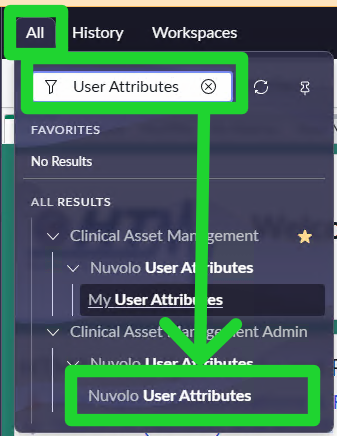
- Click the Show/Hide Filter (funnel) button. Remove all conditional filters by selecting the red X buttons. Click Run. 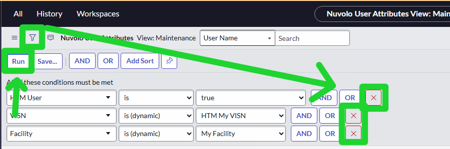
- Click the Show Column Search Row button. Type your name in the Name column search box. Press Enter. 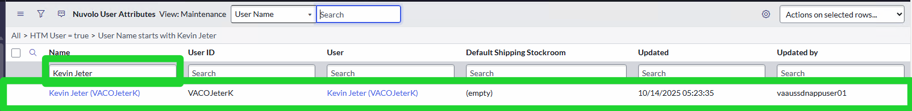
- Select your Name (by selecting the blue hyperlinked name) and review the following data fields for accuracy:
- Facility: The facility you report to on an organizational chart
- Duty Station: The facility you are performing work actions at currently
- HTM User. Make sure this box is checked to ensure you have access to Nuvolo
- HTM Manager. Make sure this box is checked to ensure you have manager privileges in Nuvolo
- HTM Primary Role. Your user role, as applicable
- Once confirmed, select "Update" (only necessary if you make changes)
- Repeat this steps for at least 2 additional technicians at your site. Which technicians did you update?
- Which two data fields under the New Section tab do you have the option to put a check mark?
- Who is responsible for enabling HTM user profiles?
- Which checkbox grants access to Nuvolo as an HTM user?
A: HTM User and HTM Manager
A: Supervisors/HTM Managers
A: HTM User (and HTM Manager if applicable).
Part 2: Technician Schedules
- In the "All" filter navigator, search for "Technician Schedules" and select it. 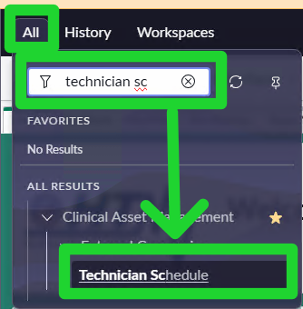
- We're going to create a New Technician Schedule for the technicians you updated User Attributes for. Select the "New" button. 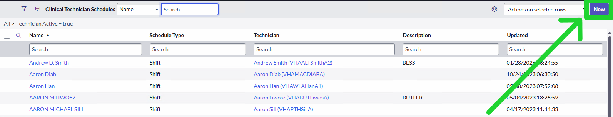
- Fill out the following fields on the form using one of your technicians.
- Name: Technician Name
- Technician: Technician Name (Use the magnifying glass to search)
- Schedule Type: Shift
- Description: HTM151 Technician Schedule Example
- Repeat these steps for the other technician you updated User Attributes for.
- Let's find the schedule! In the "Name" search bar, enter "*" and then the last name of either of the technicians you created. 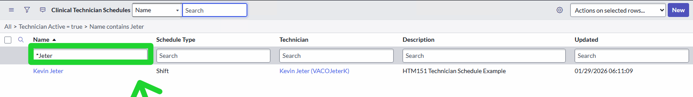
- Select your Technician Schedule from the list and click on "Load Related Lists" at the bottom of the page. 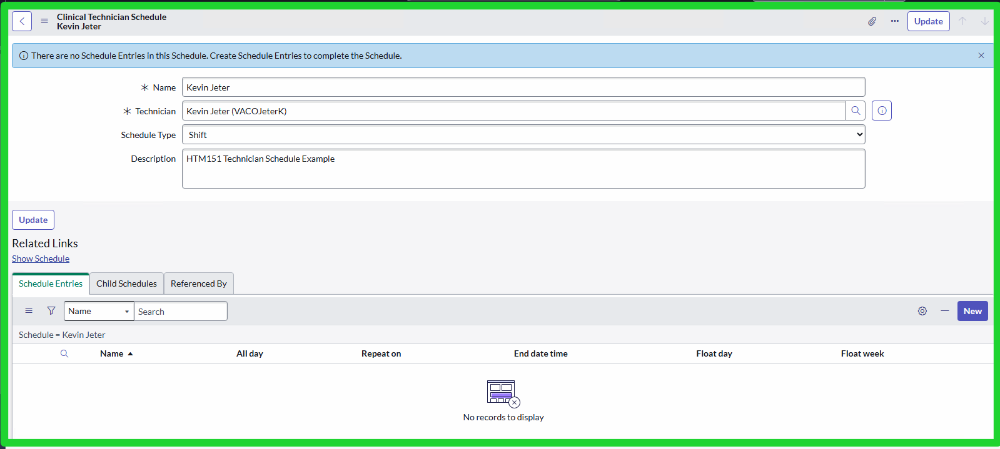
- Let's create a new Schedule Entry. Click on "New" in the Schedule Entries related list. 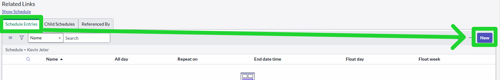
- Fill out the following fields on the Schedule Entry form:
- Name: Technician Name Monday-Friday
- Type: --None--
- Show as: Busy
- When: Today's Date and Their Work Hours
- Repeats: Every Weekday
- Repeat Until: Leave Blank
- Type: Leave Blank
- Submit the Schedule Entry. You'll see the schedule entry appear in the related list.

- Repeat these steps for the other technician.
- What happens to workorders if a technician has no active schedule?
- Where do you add the daily time range for a schedule?
- In the "All" filter navigator, search for "Internal Employee Rates" and select it. 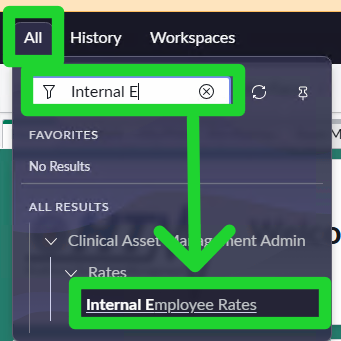
- Let's create a new Employee Rate. Select the New button. 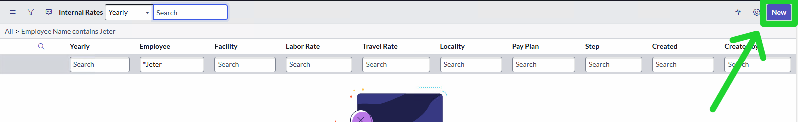
- We're going to create a new employee rate. Fill out the following fields on the Employee Rate form:
- Employee: One of the technicians names
- Position Entry Date: Today's Date
- Facility: Your Facility
- Submit the Employee Rate.
- Repeat for the other technician
- Search and find the first employee rate you just created using the Employee search (Hint: type *Jeter) 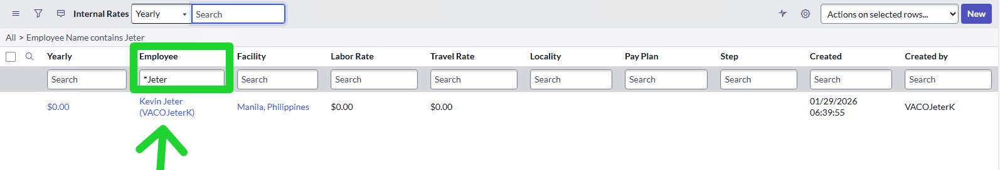
- Open the entry by selecting the blue hyperlink under "Yearly."
- We need to calculate Kevin's Labor rate. To do so, follow these steps:
- Annual Salary: $40,000
- Divide this by 2080: $40,000 / 2080 = $19.23 (round to the nearest cent)
- Enter $19.23 into the "Labor Rate" field
- Finally, let's fill out the rest of Kevin' Internal Rate Information. Fill out or confirm the following fields:
- Yearly: Enter value from MSS
- Pay Plan: Enter GS
- Classification Series: Enter the job series. (0858 is for BME)
- Grade: Enter Pay Grade
- Step: Enter current pay grade step
- Role: Enter HTM Role
- Select "Update" and you've completed updating the employee rate.
- Repeat these steps for the other technician.
- Where do rate values originate?
- Who can obtain the required values if you cannot access MSS?
- In the "All" filter navigator, search for "Unverified Devices" and select it. You may need to add "Verified" as a column to see the unverified devices. 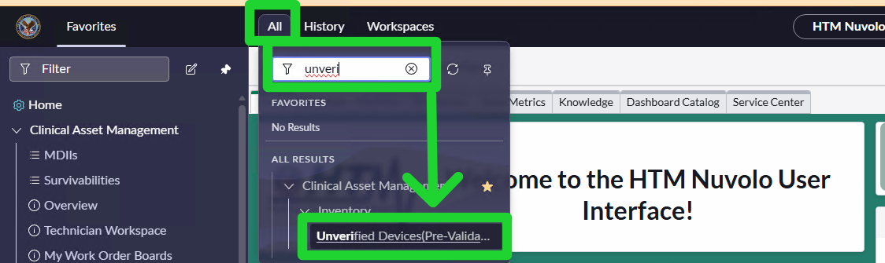
- Click on the first Unverified Device to view its details. Hint: You must select the Asset Tag to open the device! 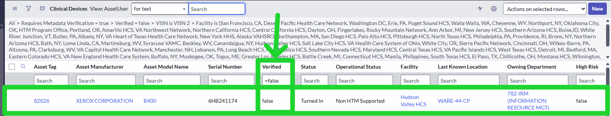
- Review the primary data fields on the device details page. Based on the information, answer the following questions:
- What is the device's serial number?
- What is the Operational Status of this device?
- Is there a Backup Available?
- Is this device a Loaner?
- What is the Warranty Expiration date?
- What is the PM Support Group?
- What was the last activity on this device?
- Is this device Cerner compatible?
- Before verifying this device, let's find out how to automatically assign groups for PM and CM Support on this device. Select the "Resources" tab.

- Let's update the PM Support Group. Select the "Eyeglass" icon next to the PM Support Group field. 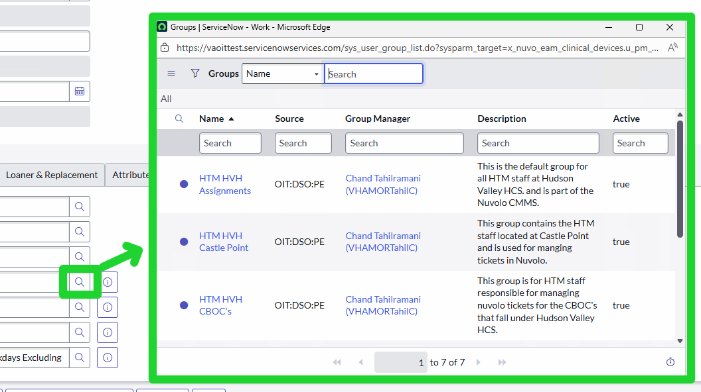
- In the pop-up window, select one of the groups to give them automatic assignment to this device. 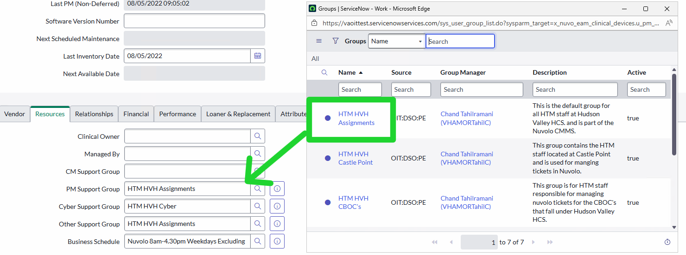
- Finally, let's verify this device. Select the "Verified" button and select Save. 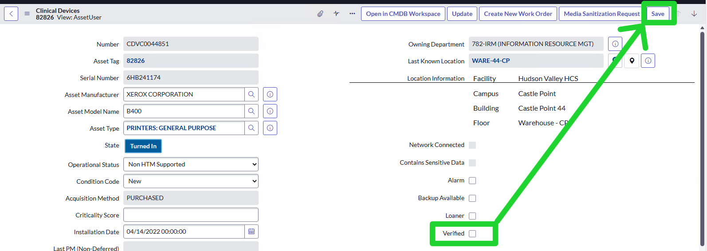
- What time does the Daily Device Feed run every day?
- Where is device data pulled from to the daily device feed?
- Where can you see the Daily Device Feed update history within a device record?
- In the "All" filter navigator, search for "Groups" and select it (Hint: It's the one under "Self Service") 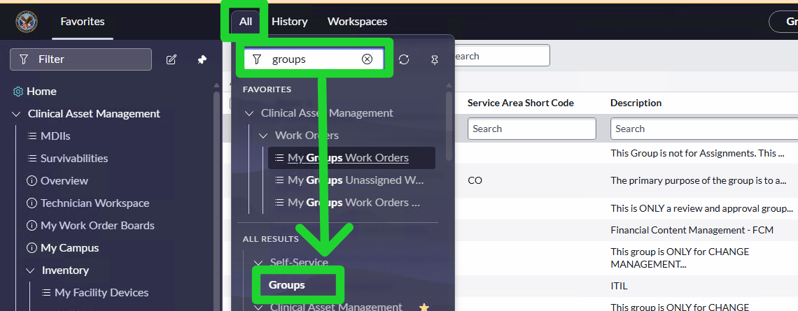
- In the list, search for "HTM" followed by the HTM Program TLA (in this example, we use ABQ. Yours will be different!) and select Enter 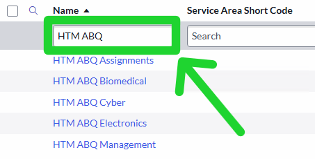
- Select one of the groups. 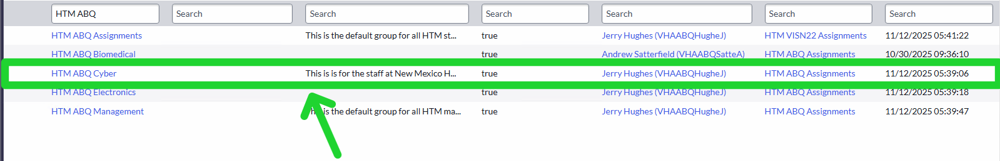
- At the bottom of the page, you can select "Load Related Lists" to view additional details like Roles, Group Members, Groups, Skills, etc. 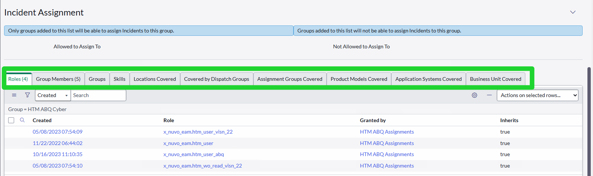
- Review the data fields and answer the following questions:
- What is the purpose/description of this group?
- How many Group Members are in this group?
- How many different Roles are assigned to this group?
- Is the group Active?
- What is the Group email?
- What is the role of the Group Manager in a Support Group?
- What function does the Default Assignee serve in a Support Group?
- Why is accurate group membership critical for automatic assignment?
- Why should you check your technician’s schedule before relying on automatic assignment?
- In the "All" filter navigator, search for "Maintenance Definitions" and select it. 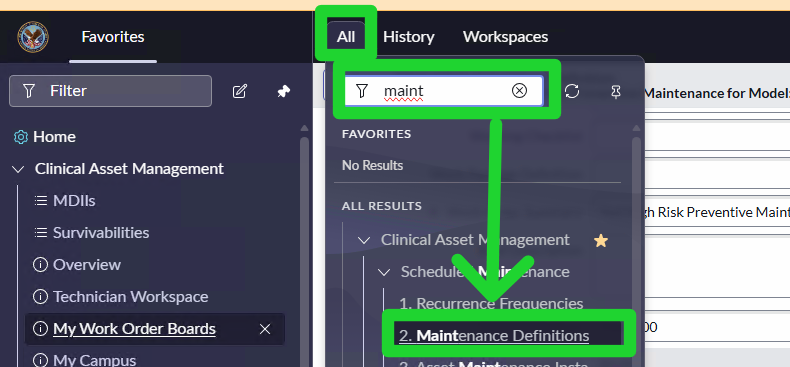
- Select "New" to create a new PM Definition. 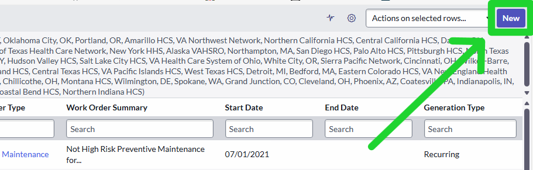
- Fill out the following fields:
- Name: VISN 20 - WWW - CAPNOMETERS - CAPNOCHECK II
- Note: Replace VISN with your correct VISN and "WWW" with your three-letter HTM Program TLA
- VISN: Choose your VISN
- Facility: Remove this Filter for our Labs. You'll want this when creating them normally though!
- Model Name: CAPNOCHECK II
- Status: In Use, Loaned Out, Out of Service
- Scroll down for the next section to fill out. Follow the screenshot below for all fields: 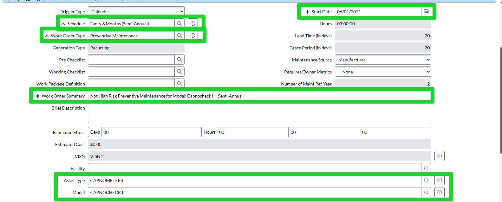
- Select "Save" or "Submit" to complete the PM Definition creation.
- Let's find your PM Definition in the list. One of the easiest ways to do so is by editing your columns and searching by "Created by"
- Select the gear icon in the top right corner of the list view 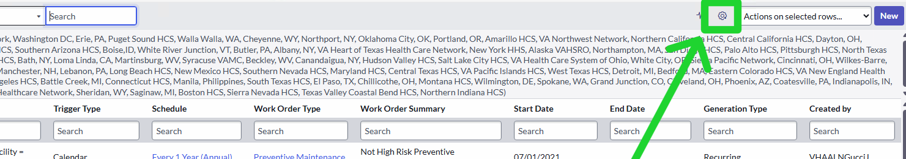
- Search for "Created by" and add it to your selected columns 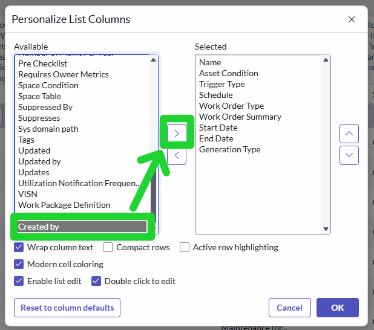
- In the column Search, type "*" and your Last Name to find your PM Definition 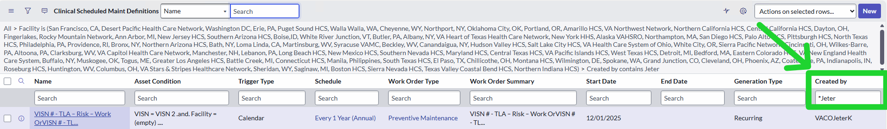
- Select your newly created definition by clicking on the name 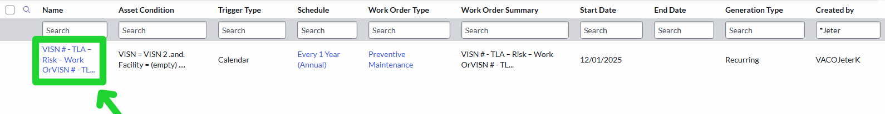
- Confirm the PM Definition is activated. If it isn't, click "Activate" in the top right corner. 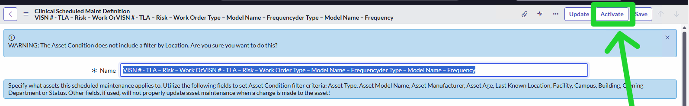
- Why won’t Clinical Scheduled Maintenances appear before clicking Activate?
- Where do you see the number of matching assets for your conditions?
- What are the two related lists you should verify after activation?
- Renavigate to the "Maintenance Definitions" main page.
- Select "New" to create a new PM Definition.
- Fill out the following fields:
- Name: VISN 20 - WWW - CAPNOMETERS - CAPNOCHECK II
- Note: Replace VISN with your correct VISN and "WWW" with your three-letter HTM Program TLA
- VISN: Choose your VISN
- Facility: Remove this Filter for our Labs. You'll want this when creating them normally though!
- Model Name: CAPNOCHECK II
- Status: In Use, Loaned Out, Out of Service
- In the below section, select "Generate Now" in Generation Type. Note that Start Date is greyed out when it's selected. 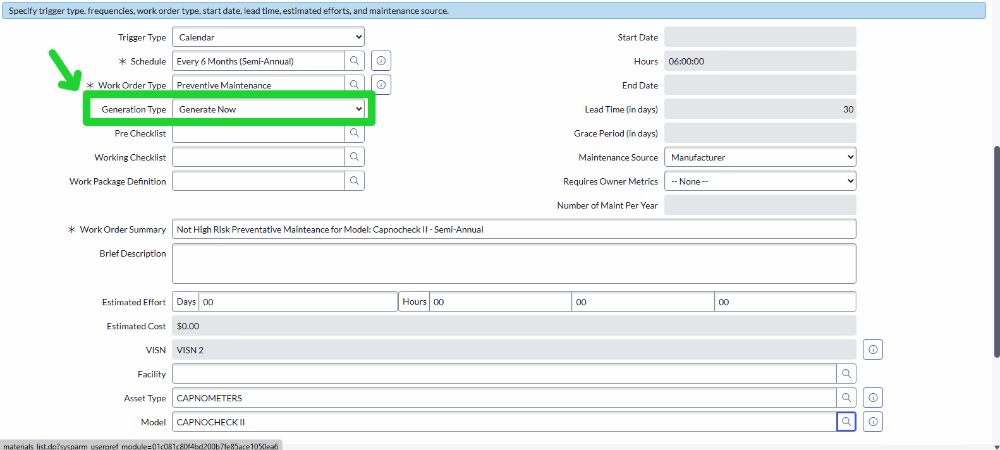
- Select "Save" or "Submit" to complete the PM Definition creation.
- Does Generate Now create PM orders immediately?
- When should you switch back to Recurring after Generate Now?
A: Work orders route to the assignment group
A: In the Schedule Entry (When section) or use the All‑day checkbox.
Part 3: Rates
Let’s make sure you know how to accurately view and update your technician’s pay rates within Nuvolo. This ensures proper record keeping to see how much labor cost is being put into specific devices. It will help make decisions on device maintenance and upkeep versus device replacement.
A: Manager Self Service (MSS)
A: Supervisory BESSs/BMEs or your VISN chief
Lab 2: Clinical Device Verification and Work Order Assignment
Part 1: Navigation and Primary Data Fields
A: 2 AM EST
A: Device data is pulled from AEMS/MERS (VistA), Maximo, NMDD
A: Under the Activities tab at the bottom of the Clinical Devices record
Part 2: Work Order Assignment
We just used Automatic Assignment in the last lab, but how do we manage our groups and create new ones if we need to?
A: Typically the HTM Manager or department chief responsible for overseeing the group’s settings and performance
A: It determines the automatically assigned technician if no specific Supported By person is listed on the device
A: Nuvolo uses Support Group membership to route CM, PM, Cyber, and Other work orders to the correct personnel
A: Because automatic assignment only works when a technician has an active schedule; otherwise, work orders default to the group instead.
Lab 3: Preventive Maintenance Definitions
A key aspect of PMs is PM definitions. This is how PMs will be auto-generated within Nuvolo. For this lab, we'll focus on creating a PM definition for "CAPNOMETERS"
Part 1: Maintenance Definitions and Automatic Creation
A: Can only be generated only after the definition is activated.
A: In the Asset Conditions in the link: No. of records matching the conditions
A: Maintenance Instance and Upcoming Scheduled Maintenance in Load Related List
Part 2: Generate Now (Ad Hoc Generation)
If a new asset/model has no existing definition, set Generation Type to Generate Now to create a work order
A: No – it is generated overnight.
A: After initial PM work orders are generated (so the definition resumes scheduled recurring generation)